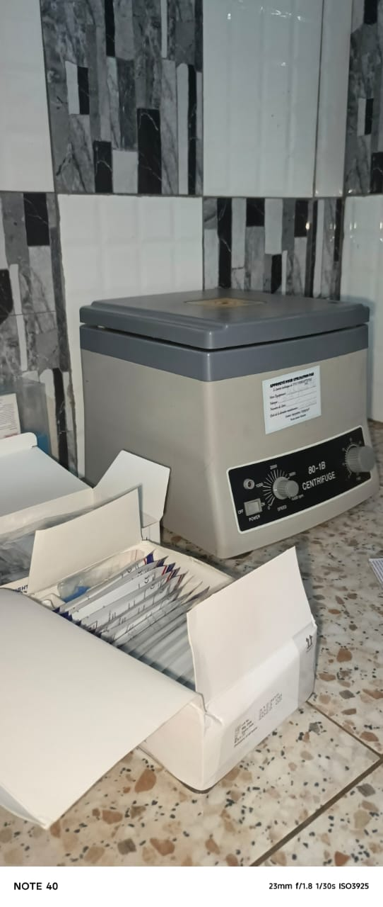
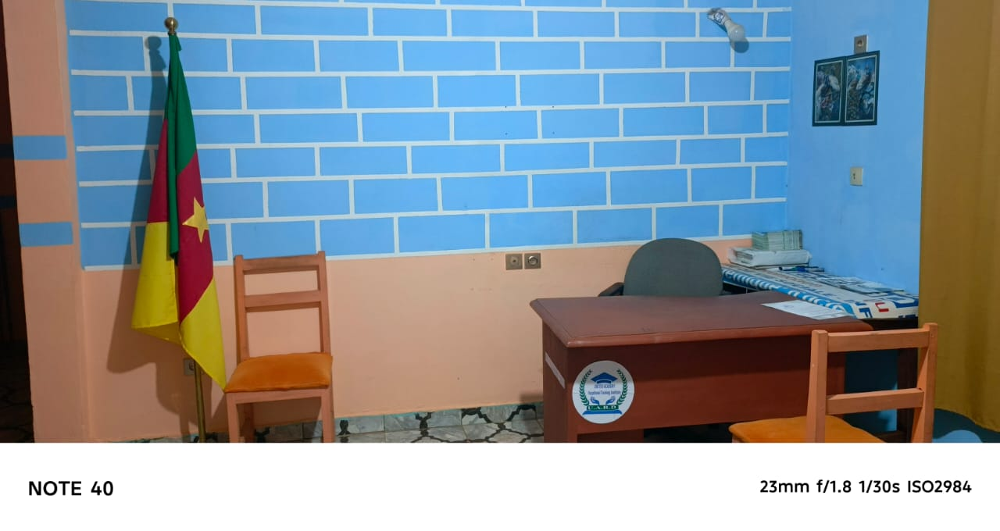

About UNITED ACADEMY-UARD
Excellence, employability, innovation – since 2024
Our story
The Vocational Training Institute UNITED ACADEMY-UARD was founded with a clear vision: to bridge the gap between academic knowledge and professional reality in Cameroon.
Officially accredited on June 28, 2024 by the Ministry of Employment and Vocational Training (MINEFOP) under agreement N° 00300/MINEFOP/SG/DFOP/SDGSF/CSACD/CBAC, our institute started with pioneering programs in health, IT, and management. In just one year, we achieved a 100% success rate at national exams and placed our graduates in top clinics, pharmacies and digital agencies.
Today, UNITED ACADEMY-UARD is known as "the school of multiple talents" – a place where students gain both technical skills and human values. We continue to expand our programs, facilities and partnerships to serve Cameroonian youth.

Our mission
To train qualified, competent and ethical professionals who meet the needs of the Cameroonian job market and can contribute to national development.
Our vision
To become a center of excellence in vocational training in Central Africa, recognized for innovation, inclusion and high employability rates.
Our values
Excellence, integrity, practical innovation, respect, and commitment to each student's success.
Le Conseil d'Établissement
Formation par compétences et référentiels métiers
Le Conseil d'Établissement veille à ce que l'ensemble des formations proposées par le VTI-UARD soit conçu et mis en œuvre sur la base de :
- référentiels métiers et compétences, en adéquation avec les réalités du marché de l'emploi
- programmes structurés autour de situations professionnelles, de savoir-faire pratiques et de compétences mesurables
- une articulation équilibrée entre enseignements théoriques, travaux pratiques, stages professionnels et immersion en milieu de travail
Cette approche permet aux apprenants de développer des compétences directement exploitables dans leur futur environnement professionnel, conformément aux orientations du MINEFOP.
Qualification professionnelle et certification
Le Conseil d'Établissement accorde une importance particulière à la qualification professionnelle, entendue comme la reconnaissance formelle des compétences acquises au terme d'un parcours de formation.
À ce titre, il s'assure :
- de la conformité des parcours de formation aux niveaux de qualification professionnelle reconnus
- de la mise en œuvre de méthodes d'évaluation objectives, normées et transparentes, alignées sur les exigences du MINEFOP
- de la crédibilité et de la valeur professionnelle des attestations et certificats délivrés
Insertion socioprofessionnelle et partenariats
Dans la logique d'insertion professionnelle prônée par le MINEFOP, le Conseil d'Établissement encourage :
- le développement de partenariats solides avec les entreprises, structures professionnelles et institutions publiques ou privées
- l'organisation et le suivi rigoureux des stages académiques et professionnels, intégrés comme composante obligatoire des parcours de formation
- l'accompagnement des apprenants vers l'emploi, l'auto-emploi et l'entrepreneuriat
Le VTI-UARD se positionne ainsi comme un acteur de la lutte contre le chômage, en formant une main-d'œuvre qualifiée, immédiatement opérationnelle et adaptée aux besoins du tissu socio-économique.
Gouvernance, discipline et assurance qualité
Le Conseil d'Établissement veille à :
- l'application stricte des textes réglementaires encadrant les établissements privés de formation professionnelle
- la mise en place de mécanismes d'assurance et d'amélioration continue de la qualité
- le respect de la discipline, de l'éthique, de la responsabilité et du professionnalisme par l'ensemble des acteurs de l'institution
Ces exigences constituent un gage de crédibilité auprès du MINEFOP, des partenaires professionnels et des bénéficiaires de la formation.
Engagement institutionnel
Le Conseil d'Établissement réaffirme sa détermination à faire du Vocational Training Institute of United Academy (VTI-UARD) une institution de référence en matière de formation professionnelle par compétences, contribuant efficacement au développement du capital humain et à la croissance socio-économique.
Il invite les apprenants, les formateurs, le personnel administratif et les partenaires à œuvrer collectivement, dans un esprit de rigueur et d'excellence, pour le rayonnement du VTI-UARD.
Pour le Conseil d'Établissement
Vocational Training Institute
United Academy for Research and Development (UARD)
Our infrastructure
Laboratories
Fully equipped paramedical lab with microscopes, centrifuges, stethoscopes, and simulation materials.
Computer rooms
Modern computer stations, video projectors, and creative software suite.
Classrooms
Spacious classrooms with modern teaching aids and multimedia equipment.
Library & archives
Quiet study space with reference books and digital resources.



Our trusted partners


... and many more clinics, pharmacies and agencies.
Coordonnées bancaires officielles
Banque : Afriland First Bank (toutes agences)
Intitulé du compte : United Academy for Research and Development SARL
Numéro de compte : 00106 09546301001 05
Ready to start your journey?
Join UNITED ACADEMY-UARD and become part of the school of multiple talents.
Contact us today